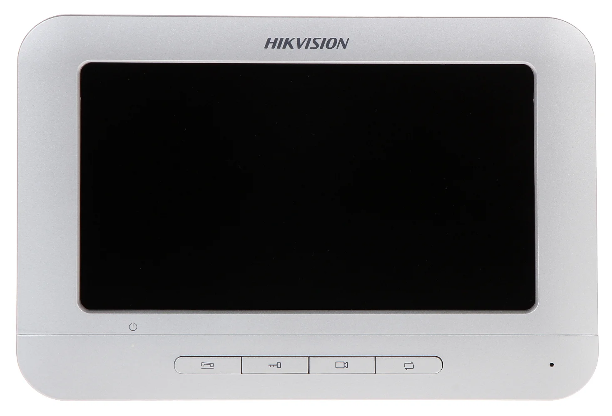

DS-KV8102-IM
 Características
Características
Cámara de videoportero 1,3MP - TCP/IP
DS-KV8102-IM
Procesador SOC incorporado de alto rendimiento.
Cámara 1.3MP HD a colores CMOS baja Iluminación
Compresión: 64 Kbps, resolución 1280x720
Ethernet autoadaptable de 10/100 Mbps
Lector de tarjetas incorporado del IC
Botón de salida para abrir la puerta
Puerto half-duplex RS-485, Memoria 256 M
Alimentación: 12/24 VDC, consumo: ≤ 12 W /POE
Dimensiones: 182 x 100 x 33 mm
DS-KH6310-WL
Características
Monitor Touch para Videoportero edificios, TCP/IP, 02CH Alarma
DS-KH6310-WL
Procesador SOC incorporado de alto rendimiento.
Pantalla táctil a colores de 7” TFT LCD
Resolución de pantalla 800 × 480.
Ethernet autoadaptable de 10/100 Mbps/WIFI
Compresión: 64 Kbps,
Entrada de alarma 2-ch
Puerto half-duplex RS-485, Memoria 256 M
Alimentación: 12/24 VDC, consumo: ≤ 10 W/POE
Dimensiones: 217 x 142 x 26 mm
DS-KM8301
 Características
Características
Estación Maestra para Sistema Multi-Apartamentos IP
DS-KM8301
Pantalla Táctil 7” (1024 × 600)
Cámara CMOS 0.3 MP
Soporta video llamadas gracias a su camara integrada
Soporta visualización en vivo de camaras IP y frentes de calle
Supresión de ruido y cancelación de eco
Funcion de procesamiento de alarmas
Apertura remota de puertas
Llamadas manos libres
Soporta video llamadas con otras centrales maestras
DS-KIS202
 Características
Características
Kit de TV portero analogo manos libres con pantalla LCD a color de 7”
DS-KIS202
Pantalla de visualización: 7 pulgadas de colores TFT LCD
Resolución de pantalla 800 × 480
Micrófono Omnidireccional Integrado,
Altavoz incorporado
Compresión: 64 Kbps,
Supresión de ruido y cancelación de eco
Alimentación: 12VDC, consumo: ≤ 5 W
Dimensiones: 195,8 x 132,8 x 18,39 mm
DS-KH2220

Características
Monitor 7" adicional para Videoportero análogo
DS-KH2220
Pantalla de visualización: 7 pulgadas de colores TFT LCD
Resolución de pantalla 800 × 480
Micrófono Omnidireccional incorporado, Salida de audio
Altavoz incorporado.
Soporta 3 estaciones interiores en el sistema de interco-
municación, Desbloqueo a distancia
Alimentación: 12VDC, consumo: ≤ 5 W
Dimensiones: 195,8 x 132,8 x 18,39 mm
DS-KAD606
Características
Switch POE para videoporteros
DS-KAD606
Fuente de alimentación incorporada de 24 VCC
POE - 6 puertos LAN de 10/100 Mbps con cable de red
2 puertos LAN en cascada de 10/100 Mbps
RJ-45, Full / Half-Duplex, MDI / MDI-X autoadaptable
IEEE802.3, IEEE802.3u, IEEE802.3x
Función de almacenamiento y reenvío
Tecnología VLAN, 1,000,000+ Horas MTBF
Montaje en pared opcional
Alimentación: 24 VDC, Consumo: ≤ 8W
Dim.: 176 × 91 x 32 mm
DS-KAW50-1
 Características
Características
Fuente de alimentación para videoporteros
DS-KAW50-1
Voltaje de entrada: 100-240VAC
Tensión de salida: 12VDC
Corriente de salida: 4.17A
Potencia de salida: 50W
Ruido y ondulación: 150mVpp
Rango de ajuste de voltaje: 11-14Vdc
Dimensiones: 98 x 97 x 38 mm
Peso: 0.23 Kg
DS-KD3002-VM
Características
Videoportero a prueba de agua, puerta de metal, Portero Edif
DS-KD3002-VM
Sistema de operación de Linux embebido
Procesador SOC integrado de alto rendimiento
Pantalla de visualización: TFT LCD colorido de 3.5 pulgadas
CMOS baja iluminación 1.3 MP HD cámara colorida
Micrófono Omnidireccional Integrado,
Altavoz incorporado
Compresión: 64 Kbps,
Supresión de ruido y cancelación de eco
Control de Acceso: lector de tarjetas.
Alimentación: 12VDC, consumo: ≤ 15 W
Dimensiones: 357 × 124 × 55 mm
Protección IP65
DS-KH6320-WTE1
 Características
Características
Videoportero para interiores con pantalla táctil de 7”
DS-KH6320-WTE1
UI V2.0: diseño fácil de usar
Pantalla táctil colorida de 7 pulgadas (1024 × 600)
PoE estándar
Almacena mensajes e imágenes capturadas en la tarjeta TF.
Desbloqueo remoto a través del software o el móvil
Micrófono omnidireccional y altavoz incorporado
Supresión de ruido y cancelación de eco
Soporta red inalámbrica
Dimensiones: 200 × 140 × 15,1 mm
Protección IP65
DS-KD8003-IME1
 Características
Características
Cámara de videoportero HD 2MP -TCP / IP, RTSP
DS-KD8003-IME1
Función de intercomunicación de video HD de 2 MP.
Baja iluminación.
Supresión de ruido y cancelación de eco.
Cámara de ojo de pez con suplemento de luz IR.
Compresión de video H.264.
Soporta alarma de manipulación.
Función de control de acceso.
Admite el acceso a los submódulos (máx. 8).
Fácil de extender.
Dimensiones: 98 × 99.8 × 43.9mm
DS-KD-KP
Características
Botonera numérica
DS-KD-KP
Soporte de apertura de puertas mediante contraseña
Fuente de alimentación con módulos de sistema
adicionales.
Botones retroiluminados
Conexión RS-485
Montaje superficial y empotrado
Grado de protección: IP65, IK7
Ambiente de trabajo: -40 ° C a + 60 ° C, humedad: 10% a 95%
Dimensiones: 98 × 100 × 34mm
DS-KD-KK
Características
Módulo pulsador simple con 6 botones
DS-KD-KK
Etiquetas de nombre personalizables.
Súper fácil de instalar (POE estándar, montaje
empotrado / empotrado en la estación de la puerta)
Conexión por RS485.
Protección IP65.
Se alimenta desde DS-KD8003-IME1.
Consumo de energía: ≤2W
Dimensiones: 98.2x100.2x33.7mm
DS-KD-M/E
 Características
Características
Módulo lectora de tarjetas Mifare
DS-KD-M/E
Soporta el desbloqueo de la puerta deslizando tarjetas
Admite tarjetas: Mifare
Compensación de contraluz
Potencia de salida: 12VDC.
Interruptor DIP: 8
Instalación: montaje empotrado, montaje en superficie
Nivel de protección IP65
Apoya la Emisión de Nueva Tarjeta